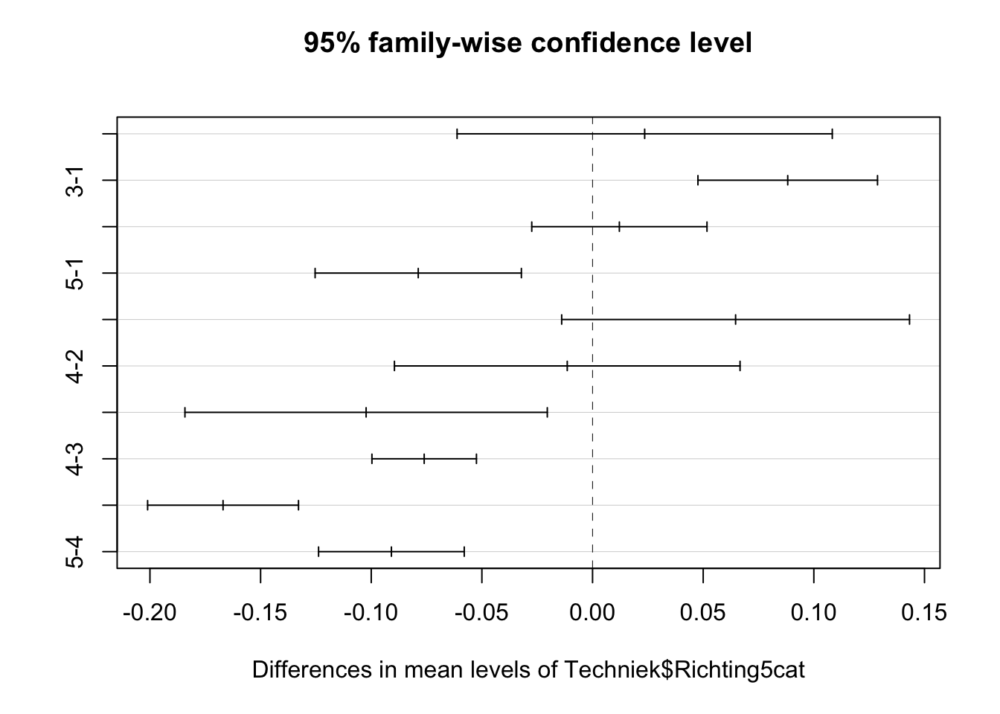
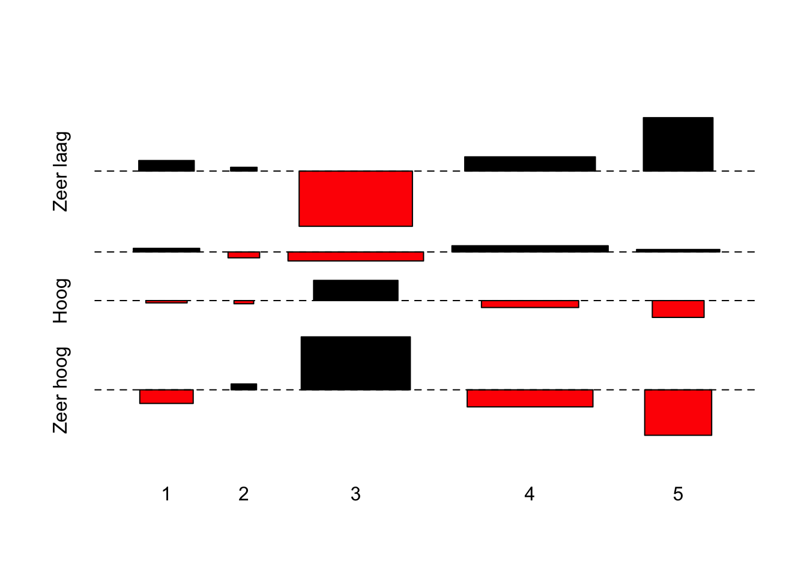
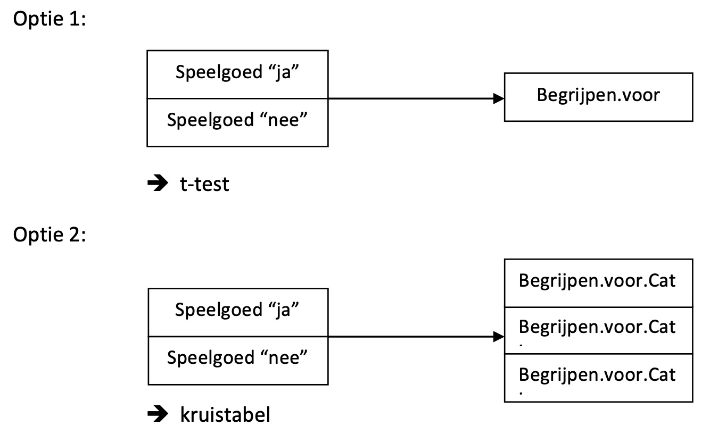
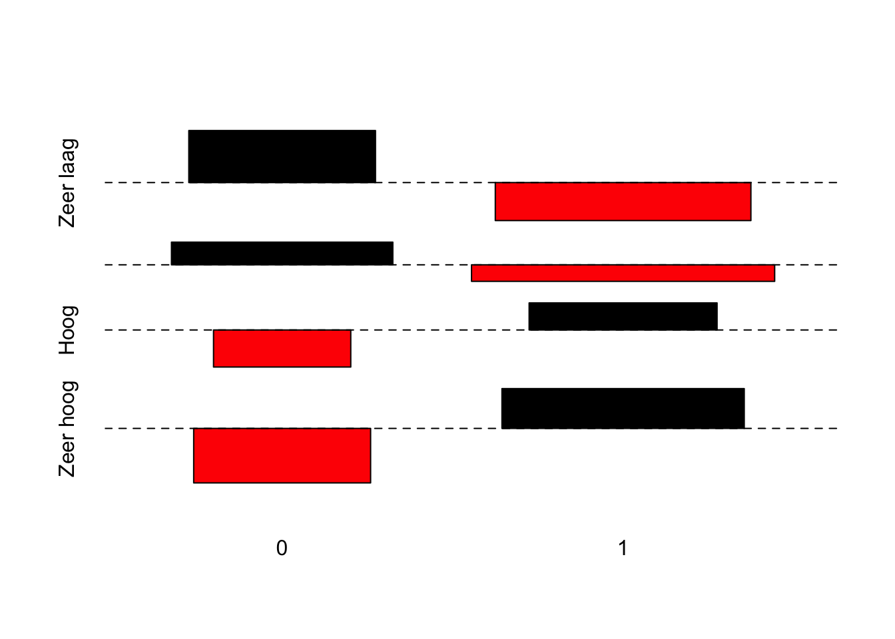

tapply(Techniek$Begrijpen.voor, Techniek$Richting5cat, FUN=mean, na.rm=TRUE) 1 2 3 4 5
0.6216667 0.6452206 0.7098642 0.6337891 0.5429025 Vooraleer je de oefeningen kan oplossen is het belangrijk om zowel de dataset te laden, het pakket car te activeren en ook de OLP2 Functies te activeren.
Om deze vragen te beantwoorden dienen we een ANOVA analyse uit te voeren. Hieronder volgen we de verschillende stappen van een ANOVA analyse om zo een volledig antwoord op deze vragen te kunnen formuleren.
We starten met het berekenen van de gemiddelde scores in de steekproef voor Begrijpen.voor van de leerlingen in de verschillende studierichtingen.
tapply(Techniek$Begrijpen.voor, Techniek$Richting5cat, FUN=mean, na.rm=TRUE) 1 2 3 4 5
0.6216667 0.6452206 0.7098642 0.6337891 0.5429025 Hieruit leren we dat in de steekproef leerlingen uit categorie 3 gemiddeld het hoogst scoren op Begrijpen.voor (gemiddelde = 0.71) en leerlingen uit categorie 5 scoren gemiddeld het laagst (gemiddelde = 0.54).
Vooraleer we de ANOVA zelf kunnen uitvoeren dienen we de assumptie van gelijke binnengroepenvarianties na te gaan aan de hand van de Levene Test.
leveneTest(Techniek$Begrijpen.voor, Techniek$Richting5cat)Levene's Test for Homogeneity of Variance (center = median)
Df F value Pr(>F)
group 4 2.0016 0.09181 .
1873
---
Signif. codes: 0 '***' 0.001 '**' 0.01 '*' 0.05 '.' 0.1 ' ' 1Uit de bovenstaande output leren we dat we de nulhypothese (= er zijn gelijke binnengroepenvarianties in de populatie) niet kunnen verwerpen. Maw, de assumptie gaat wel op. Dus, we kunnen de functie aov() hanteren.
Model.Begrijpen <- aov(Techniek$Begrijpen.voor~ Techniek$Richting5cat)
summary(Model.Begrijpen) Df Sum Sq Mean Sq F value Pr(>F)
Techniek$Richting5cat 4 5.27 1.3182 49.34 <2e-16 ***
Residuals 1873 50.04 0.0267
---
Signif. codes: 0 '***' 0.001 '**' 0.01 '*' 0.05 '.' 0.1 ' ' 1
489 observations deleted due to missingnessDe analyses leren ons dat er een statistisch significant verband is tussen studierichting en Begrijpen.voor (F(4,1873) = 49.34, p<0.001).
Een volgende stap is nagaan hoe groot het effect is (effectgrootte berekenen).
etasq(Model.Begrijpen) Partial eta^2
Techniek$Richting5cat 0.0953278
Residuals NAEta-kwadraat bedraagt 0.095 en is dus tussen 0.06 en 0.14: het gaat om een medium effect.
Een laatste stap is nagaan welke groepen onderling verschillen van elkaar. Dit doen we aan de hand van post-hoc testen door middel van de functie TukeyHSD( ).
Model.Begrijpen.Tukey <- TukeyHSD(Model.Begrijpen)
Model.Begrijpen.Tukey Tukey multiple comparisons of means
95% family-wise confidence level
Fit: aov(formula = Techniek$Begrijpen.voor ~ Techniek$Richting5cat)
$`Techniek$Richting5cat`
diff lwr upr p adj
2-1 0.02355392 -0.06121659 0.10832444 0.9422650
3-1 0.08819755 0.04762624 0.12876886 0.0000000
4-1 0.01212240 -0.02746614 0.05171093 0.9193976
5-1 -0.07876412 -0.12536703 -0.03216122 0.0000413
3-2 0.06464363 -0.01394620 0.14323346 0.1634082
4-2 -0.01143153 -0.08951854 0.06665549 0.9946245
5-2 -0.10231805 -0.18418477 -0.02045132 0.0059194
4-3 -0.07607515 -0.09968814 -0.05246217 0.0000000
5-3 -0.16696167 -0.20105203 -0.13287132 0.0000000
5-4 -0.09088652 -0.12380115 -0.05797189 0.0000000Kijken we naar de laatste kolom dan kunnen we daar de verschillende lijnen identificeren waarvoor geldt dat de p-waarde lager is dan 0.05 (lijnen 2, 4, 7, 8, 9, 10).
We kunnen deze post-hoc testen ook visualiseren:
plot(Model.Begrijpen.Tukey)
CONCLUSIE:
Afhankelijk van de studierichting die een leerling volgt, verschilt de mate waarin techniek wordt begrepen. Het gaat om een medium (eta-kwadraat = 0.10) en statistisch significant effect (F(4,1873) = 49.34, p<0.001). We verwachten dit effect dus ook in de populatie terug te vinden. Uit de post-hoc analyse blijkt dat leerlingen uit categorie 5 (Handel/STV) het meest verschillen van de andere leerlingen. Hun score op
Begrijpen.vooris significant (p < 0.05) lager dan deze van leerlingen uit categorie 2 (Kunst), categorie 3 (Latijn) en categorie 4 (Moderne wetenschappen). Ook tussen de groepen Latijn (categorie 3) en Techniek (categorie 1) is een significant verschil (p < 0.05) in het begrijpen van techniek terug te vinden. De leerlingen uit de Latijnse scoren significant (p < 0.05) beter dan de leerlingen uit de meer technische richtingen. De verschillen tussen leerlingen uit de technische (categorie 1), moderne (categorie 4) of kunstrichtingen (categorie 2) in onze steekproef kunnen we niet doortrekken naar de populatie (p > 0.05).
Deze oefening vraagt om een analyse aan de hand van een kruistabel.
Als start voor deze oefening maken we een categorische variant van de variabele Begrijpen.voor via de recode( ) functie.
# Kwartielen berekenen
quantile(Techniek$Begrijpen.voor, c(0.25,0.5,0.75), na.rm=TRUE) 25% 50% 75%
0.5000 0.6875 0.7500 # Hercoderen
Techniek$Begrijpen.voor.Cat <- recode(
Techniek$Begrijpen.voor,
"0:0.5 = 'Zeer laag';
0.5:0.6875 = 'Laag';
0.6875:0.75 = 'Hoog';
0.75:1 = 'Zeer hoog'",
as.factor = TRUE,
levels = c("Zeer laag", "Laag", "Hoog", "Zeer hoog")
)Nu kunnen we een kruistabel aanmaken. Meerbepaald maken we een tabel met kolompercentages waarin we da afhankelijke variabele (Begrijpen.voor.Cat) in de rijen plaatsen.
kruistabel.kolom(Techniek$Begrijpen.voor.Cat, Techniek$Richting5cat) x
y 1 2 3 4 5 Sum
Zeer laag 30.666667 29.411765 12.460064 28.485577 46.186441 25.559105
Laag 38.666667 29.411765 34.025559 38.100962 37.711864 36.581470
Hoog 13.333333 11.764706 17.731629 13.100962 9.322034 14.164004
Zeer hoog 17.333333 29.411765 35.782748 20.312500 6.779661 23.695421
Sum 100.000000 100.000000 100.000000 100.000000 100.000000 100.000000Vervolgens berekenen we de Chi-kwadraat test. Door gebruik te maken van de functie chi.kwadraat.test() krijgen we in de output ook meteen een maat van effectgrootte mee (Cramer’s V).
chi.kwadraat.test(
table(Techniek$Begrijpen.voor.Cat,
Techniek$Richting5cat)
)
Pearson's Chi-squared test
data: table(Techniek$Begrijpen.voor.Cat, Techniek$Richting5cat)
X-squared = 172.76, df = 12, p-value < 2.2e-16
95 percent confidence interval:
0.1428339 0.1959541
sample estimates:
Cramer's V
0.1751129 Tot slot visualiseren we de kruistabel. Let op dat je hier rijen en kolommen omwisselt in vergelijking met de vorige stukken code. Daarom dat we in de onderstaande code-blok eerst een nieuw object aanmaken Tabel_asso waarin de kruistabel staat met de rijen en kolommen omgewisseld.
Tabel_asso <- table(Techniek$Richting5cat,Techniek$Begrijpen.voor.Cat)
assocplot(Tabel_asso)
Als we alle output overschouwen, dan komen we tot volgende conclusie.
CONCLUSIE:
De kolompercentages geven weer hoe binnen de verschillende clusters van studierichtingen wordt gescoord op het begrijpen van techniek. We bespreken enkele ‘opvallende’ cijfers… Bij de leerlingen uit technische studierichtingen zit de grootste groep in de categorie “Laag” (38.67%). Het percentage van deze leerlingen in de categorie “Zeer hoog” bedraagt slechts 17.33%. De grootste groep leerlingen die Latijn volgen is terug te vinden in de categorie “Zeer hoog” (35.78%). Deze groep leerlingen scoort dus in het algemeen beter dan de leerlingen uit de andere studierichtingen. Handel/STV-leerlingen scoren dan weer sterk lager. 46.19% van deze leerlingen is terug te vinden in de categorie “Zeer Laag” en slechts 6.78% in de categorie “Zeer Hoog”. De chi²-analyse leert ons dat het verband statistisch significant is (p < 0.05), maar eerder beperkt (Cramer’s V = 0.18).

Optie 1: t-test
Eerst de Levene Test.
leveneTest(Techniek$Begrijpen.voor, Techniek$Speelgoed)Levene's Test for Homogeneity of Variance (center = median)
Df F value Pr(>F)
group 1 0.1089 0.7415
1890 P-waarde is hoger dan 0.05, dus de assumptie van gelijke binnengroepenvarianties gaat op. Nu kunnen we de t-test zelf uitvoeren.
t.test(Techniek$Begrijpen.voor~Techniek$Speelgoed, var.equal=TRUE)
Two Sample t-test
data: Techniek$Begrijpen.voor by Techniek$Speelgoed
t = -3.6108, df = 1890, p-value = 0.0003132
alternative hypothesis: true difference in means between group 0 and group 1 is not equal to 0
95 percent confidence interval:
-0.04621105 -0.01368049
sample estimates:
mean in group 0 mean in group 1
0.6251900 0.6551357 Ook de effectgrootte gaan we na (Cohen’s d).
d(Techniek$Begrijpen.voor,Techniek$Speelgoed)[1] -0.1737467CONCLUSIE:
In de steekproef scoren leerlingen gemiddeld 0.66 op begrijpen van techniek, terwijl leerlingen die thuis geen technisch speelgoed hebben iets lager scoren (gemiddelde = 0.63). Het effect van al dan niet technisch speelgoed hebben, is statistisch significant (p < 0.05). We kunnen het dus doortrekken naar de populatie. Het effect is echter zo klein (d = 0.17) dat het van weinig praktische waarde is.
Optie 2: kruistabel
Een tabel met kolompercentages aanmaken met afhankelijke variabele (Begrijpen.voor.Cat) in de rijen.
kruistabel.kolom(Techniek$Begrijpen.voor.Cat,Techniek$Speelgoed) x
y 0 1 Sum
Zeer laag 29.63526 24.06807 26.00423
Laag 38.44985 35.57536 36.57505
Hoog 12.15805 15.07293 14.05920
Zeer hoog 19.75684 25.28363 23.36152
Sum 100.00000 100.00000 100.00000De Chi-kwadraattest uitvoeren.
chi.kwadraat.test(table(Techniek$Begrijpen.voor.Cat, Techniek$Speelgoed))
Pearson's Chi-squared test
data: table(Techniek$Begrijpen.voor.Cat, Techniek$Speelgoed)
X-squared = 14.289, df = 3, p-value = 0.002537
95 percent confidence interval:
0.03199597 0.12691805
sample estimates:
Cramer's V
0.08690546 En tot slot ook de tabel visueel maken.
Tabel_asso <- table(Techniek$Speelgoed,Techniek$Begrijpen.voor.Cat)
assocplot(Tabel_asso)
Alles samengenomen kunnen we het volgende concluderen uit deze analyse.
Conclusie:
De kolompercentages geven weer of leerlingen die al dan niet technisch speelgoed bezitten anders scoren op het begrijpen van techniek. Uit de kruistabel blijkt dat de verschillen eerder klein zijn. Beide groepen leerlingen hebben gelijkaardige percentages binnen de verschillende categorieën van ‘Begrijpen.voor.Cat’. Hoewel de chi²-analyse aangeeft dat het om een statistisch significant verband gaat (p < 0.05), wijst de Cramer’s V op een klein effect (Cramer’s V = 0.09).
Vergelijken we beide analyses, dan komen we tot een vrij gelijkaardige conclusie. Er is een statistisch significant verband, maar het is verwaarloosbaar klein.